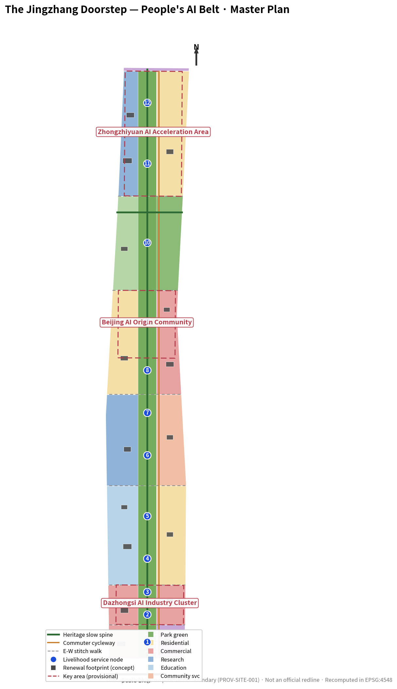
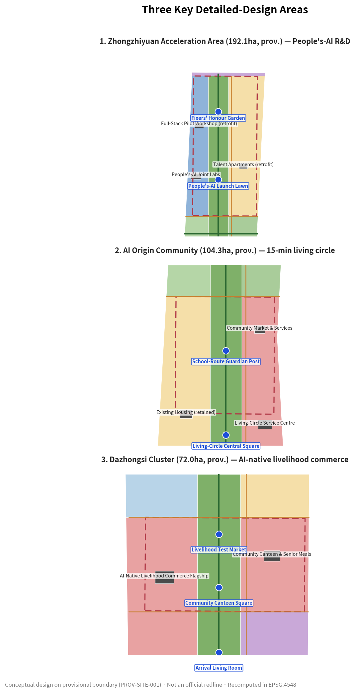
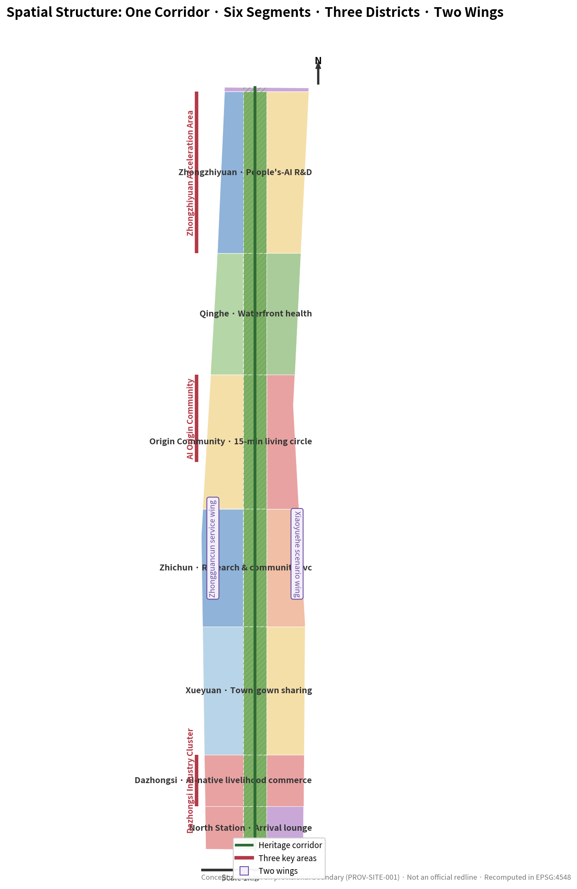
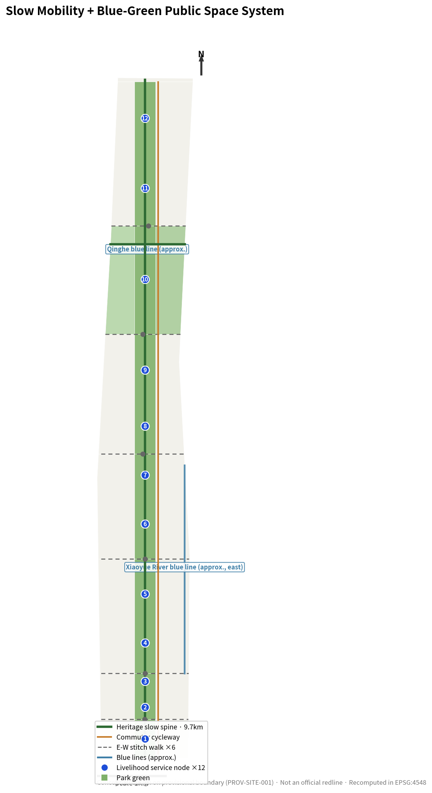
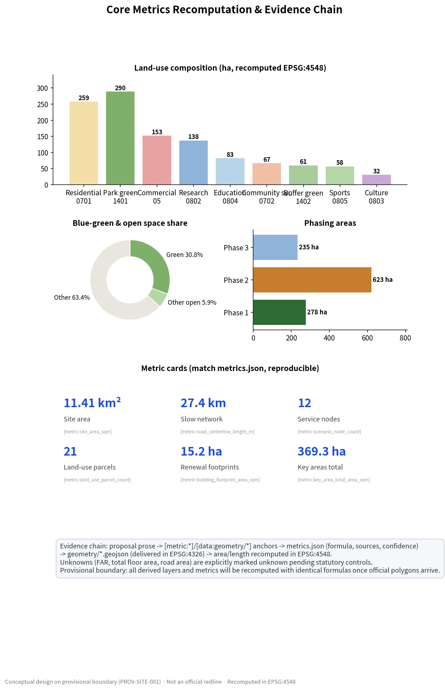

Strategic Study Scope
43.6 km²
- AI industry ecology and multi-district synergy
- Future urban form and cultural narrative framework
- Global case transfer and brand communication
No grand narrative. Starting from a checklist of real livelihood problems along the corridor, the proposal replaces "technology push" with "problem pull", organising the 9.7 km Jingzhang heritage corridor into a People's-AI livelihood service belt reachable within 15 minutes: 12 livelihood service nodes, 13 AI scenario cards and 21 land-use parcels, all mapped and all metrics recomputable in EPSG:4548.
中文版本 →All five evidence figures derive from the same GeoJSON layers and metrics.json: the overview map shows the "one spine, two wings" structure and the 12 livelihood service nodes; accompanying figures cover the three key areas, land-use structure, slow mobility and blue-green public space, and metric evidence. All figures use local relative paths and work offline.





Every value matches metrics.json exactly (status=known) and carries machine-readable data-metric / data-value attributes. Unknown metrics show "pending official data" with no numeric claim.
| Metric data-metric | Value | Unit | Confidence | Formula |
|---|---|---|---|---|
site_area_sqm | 11,412,825.386 | m² | high | polygon_area(site_boundary) |
key_area_count | 3 | count | high | count(key_areas) |
key_area_total_area_sqm | 3,692,893.005 | m² | high | sum(polygon_area(key_areas)) |
green_space_area_sqm | 3,510,582.777 | m² | medium | sum(polygon_area(green_space)) |
green_ratio | 0.3076 | ratio | medium | green_space_area_sqm / site_area_sqm |
public_open_space_area_sqm | 4,181,839.614 | m² | medium | land use 1401+1402+0805 + public_space |
public_open_space_ratio | 0.366416 | ratio | medium | public_open_space_area_sqm / site_area_sqm |
public_space_area_sqm | 90,800.0 | m² | medium | sum(polygon_area(public_space)) |
public_space_ratio | 0.007956 | ratio | medium | public_space_area_sqm / site_area_sqm |
building_footprint_area_sqm | 152,050.0 | m² | medium | sum(polygon_area(buildings)); indicative renewal objects |
building_density | 0.013323 | ratio | low | 16 indicative renewal objects only; not existing density |
road_centerline_length_m | 27,416.0 | m | medium | sum(line_length(roads)) |
land_use_parcel_count | 21 | count | high | count(land_use polygons) |
scenario_node_count | 12 | count | medium | count(public_space livelihood nodes) |
phasing_phase1_area_sqm | 2,779,410.657 | m² | medium | polygon_area(PHASE-01) |
phasing_phase2_area_sqm | 6,231,800.224 | m² | medium | polygon_area(PHASE-02) |
phasing_phase3_area_sqm | 2,346,192.758 | m² | medium | polygon_area(PHASE-03) |
floor_area_ratio | pending official data | ratio | unknown | Statutory FAR controls missing |
total_floor_area_sqm | pending official data | m² | unknown | Requires approved FAR per parcel |
road_area_sqm | pending official data | m² | unknown | Requires official redline widths; suggested path widths 6–15 m |
The three working scopes required by the announcement cascade from strategy to structure to detailed design.
All three key areas use provisional boundaries, each with a clear industry positioning, spatial strategy and implementation-risk statement, answering the mandatory announcement item 1.5.3.
Garden-style independent-innovation district: national platforms, industry showcase, Qinghe culture, external transport and low-carbon social space; hosts the People's-AI Launch Lawn and Fixers' Honour Garden.
Campus-adjacent tech-transfer district: university source innovation, open-source community, talent services, retrofit-retain strategies and station integration; hosts the Living-Circle Central Square and School-Route Guardian Post.
Urban intelligent-economy district: leading enterprises, agent-native business formats, commercial services, composite green-space use and four-quadrant junction connectivity; hosts the Community Canteen Square and Livelihood Test Market.
21 land-use parcels organised as "six segments × spine/wings". Areas below are recomputed in EPSG:4548 on the provisional boundary.
Note: parcels derive from site-boundary partitioning (LAND_USE_TOPOLOGY check passed). Park green 1401 + buffer green 1402 + sports 0805 + the 12 public spaces together form 4,181,839.614 m² of public open space (36.64%).
The heritage-park vitality belt is the spine: a slow-mobility trunk runs through six segments while stitching paths tie both wings back to the corridor; blue-green public space covers the heritage park, the Qinghe waterfront buffer and the 12 livelihood nodes.
Suggested widths for the slow-mobility trunk and stitching paths: 6–15 m, to be detailed by professional teams. Road redline widths and cross-sections are not in the public site package, so road area remains pending official data. The blue-green system overlaps the 15-minute living circles so every livelihood node is walkable.
Each node answers a real livelihood problem and pairs with one or more AI scenario cards. Names match public_space.geojson.
Building footprints are 16 conceptual renewal objects (not tied to specific ownership parcels): 152,050.0 m² total footprint at an indicative density of 0.013323. Implementation rolls out in three phases — livelihood first, industry second, completion last.
≈ 278.0 ha · 12 nodes and the first scenario cards go live
≈ 623.2 ha · shared facilities, renewal projects and pilot transfer
≈ 234.6 ha · North Station hub and Qinghe waterfront completion
Phase shares: 24.5% / 54.9% / 20.6% of the recomputed total 11,357,403.639 m².
Each card follows one format: problem → AI answer → spatial anchor → data & privacy boundary → human review → operator → effect metric → exit condition. All scenarios are conceptual; test-type scenarios require dual approval by the competent authority and the community council before piloting.
compliance_matrix.json maps every mandatory announcement item (1.3–1.5) and all six professional tasks (agent.1–agent.6) to report sections, GeoJSON layers, metrics, drawings, sources and self-checks.
All checks in self_check.json pass; this page itself must also pass the offline-static and metric-consistency review (visual_review.py).
Every dataset and judgement is traceable; every conclusion-bearing assumption is stated explicitly. GeoJSON, metrics.json, the matrices and self-check results remain authoritative — this page is a human-readable view only.